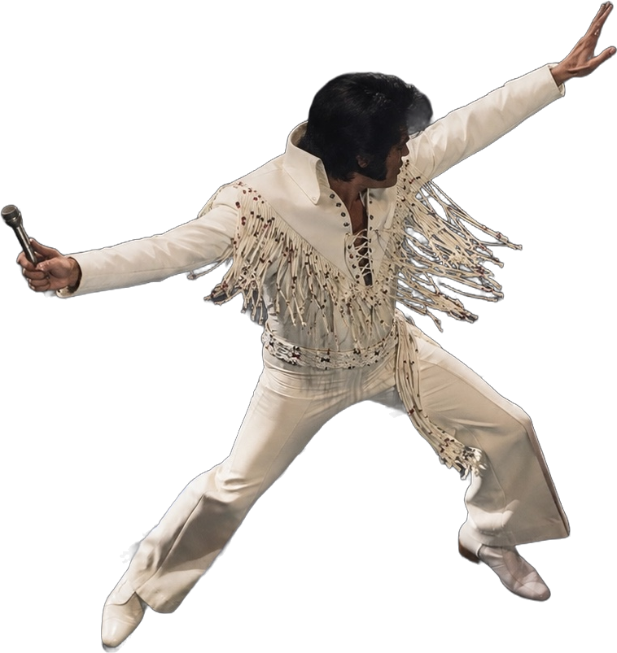
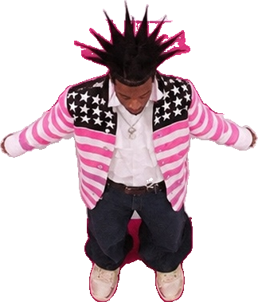
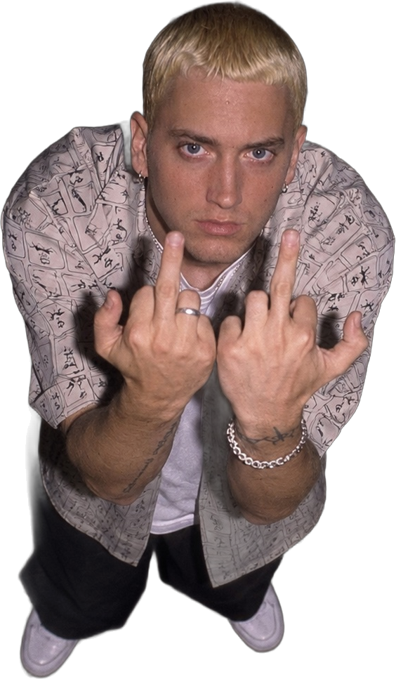
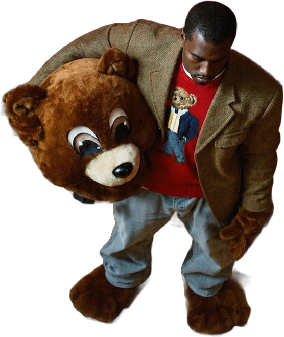

#20
EPportrait to come

#20 OF 20 · ALL TIME
ELVIS PRESLEY
15.3hours streamed
- Plays
- 2,353
- Share of all listening
- 0.71%
- First heard
- 2021-06-28
- Peak year
- 2022 · 10.8h
- Most-played track
- Suspicious Minds · ×188
- Songs in rotation
- 367
#19
YTportrait to come
#19 OF 20 · ALL TIME
YOUNG THUG
15.4hours streamed
- Plays
- 742
- Share of all listening
- 0.71%
- First heard
- 2021-08-21
- Peak year
- 2026 · 9.8h
- Most-played track
- Hot (Remix) [feat. Gunna and Travis Scott] · ×271
- Songs in rotation
- 36
#18
RAportrait to come
#18 OF 20 · ALL TIME
RICH AMIRI
16.2hours streamed
- Plays
- 898
- Share of all listening
- 0.75%
- First heard
- 2024-01-09
- Peak year
- 2026 · 14.3h
- Most-played track
- SAME OLD ME · ×342
- Songs in rotation
- 34
#17
BFportrait to come

#17 OF 20 · ALL TIME
BRENT FAIYAZ
17.8hours streamed
- Plays
- 2,016
- Share of all listening
- 0.83%
- First heard
- 2021-07-10
- Peak year
- 2023 · 7.3h
- Most-played track
- GRAVITY (FEAT. TYLER, THE CREATOR) · ×370
- Songs in rotation
- 69
#16
MJportrait to come

#16 OF 20 · ALL TIME
MICHAEL JACKSON
20.6hours streamed
- Plays
- 1,229
- Share of all listening
- 0.95%
- First heard
- 2020-07-21
- Peak year
- 2026 · 14.6h
- Most-played track
- You Rock My World · ×226
- Songs in rotation
- 93
#15
LUportrait to come

#15 OF 20 · ALL TIME
LIL UZI VERT
21.0hours streamed
- Plays
- 1,567
- Share of all listening
- 0.97%
- First heard
- 2021-12-03
- Peak year
- 2026 · 12.0h
- Most-played track
- Homecoming · ×470
- Songs in rotation
- 78
#14
PCportrait to come

#14 OF 20 · ALL TIME
PLAYBOI CARTI
22.4hours streamed
- Plays
- 2,082
- Share of all listening
- 1.04%
- First heard
- 2021-06-27
- Peak year
- 2026 · 16.6h
- Most-played track
- CRANK · ×397
- Songs in rotation
- 91
#13
Eportrait to come

#13 OF 20 · ALL TIME
EMINEM
24.2hours streamed
- Plays
- 3,010
- Share of all listening
- 1.12%
- First heard
- 2020-12-08
- Peak year
- 2021 · 11.9h
- Most-played track
- The Real Slim Shady · ×286
- Songs in rotation
- 222
#12
TTportrait to come
#12 OF 20 · ALL TIME
TYLER, THE CREATOR
24.4hours streamed
- Plays
- 3,029
- Share of all listening
- 1.13%
- First heard
- 2020-12-07
- Peak year
- 2024 · 8.9h
- Most-played track
- IGOR'S THEME · ×280
- Songs in rotation
- 124
#11
CBportrait to come

#11 OF 20 · ALL TIME
CHRIS BROWN
28.0hours streamed
- Plays
- 1,390
- Share of all listening
- 1.29%
- First heard
- 2022-02-10
- Peak year
- 2026 · 14.0h
- Most-played track
- Call Me Every Day (feat. Wizkid) · ×369
- Songs in rotation
- 70
#10
Pportrait to come
#10 OF 20 · ALL TIME
PARTYNEXTDOOR
32.2hours streamed
- Plays
- 2,000
- Share of all listening
- 1.49%
- First heard
- 2021-08-21
- Peak year
- 2026 · 16.6h
- Most-played track
- FREAK IN YOU · ×660
- Songs in rotation
- 55
#9
Sportrait to come

#9 OF 20 · ALL TIME
SZA
34.0hours streamed
- Plays
- 2,591
- Share of all listening
- 1.57%
- First heard
- 2021-08-22
- Peak year
- 2024 · 10.9h
- Most-played track
- Shirt · ×370
- Songs in rotation
- 77
#8
Fportrait to come
#8 OF 20 · ALL TIME
FUTURE
35.6hours streamed
- Plays
- 2,060
- Share of all listening
- 1.65%
- First heard
- 2021-07-27
- Peak year
- 2026 · 20.7h
- Most-played track
- Type Shit · ×297
- Songs in rotation
- 134
#7
KLportrait to come

#7 OF 20 · ALL TIME
KENDRICK LAMAR
37.2hours streamed
- Plays
- 2,912
- Share of all listening
- 1.72%
- First heard
- 2021-06-27
- Peak year
- 2024 · 18.2h
- Most-played track
- PRIDE. · ×283
- Songs in rotation
- 92
#6
KWportrait to come

#6 OF 20 · ALL TIME
KANYE WEST
44.7hours streamed
- Plays
- 5,236
- Share of all listening
- 2.07%
- First heard
- 2020-12-09
- Peak year
- 2024 · 23.1h
- Most-played track
- Father Stretch My Hands Pt. 1 · ×743
- Songs in rotation
- 204
#5
BTportrait to come

#5 OF 20 · ALL TIME
BRYSON TILLER
46.1hours streamed
- Plays
- 2,743
- Share of all listening
- 2.13%
- First heard
- 2022-02-10
- Peak year
- 2026 · 32.7h
- Most-played track
- Don't · ×879
- Songs in rotation
- 52
#4
Pportrait to come

#4 OF 20 · ALL TIME
PRINCE
56.2hours streamed
- Plays
- 4,703
- Share of all listening
- 2.6%
- First heard
- 2020-03-09
- Peak year
- 2026 · 18.6h
- Most-played track
- Kiss · ×150
- Songs in rotation
- 489
#3
DTportrait to come

#3 OF 20 · ALL TIME
DON TOLIVER
72.2hours streamed
- Plays
- 3,596
- Share of all listening
- 3.34%
- First heard
- 2021-08-21
- Peak year
- 2026 · 45.8h
- Most-played track
- No Idea · ×369
- Songs in rotation
- 94
#2
TSportrait to come

#2 OF 20 · ALL TIME
TRAVIS SCOTT
89.5hours streamed
- Plays
- 5,892
- Share of all listening
- 4.14%
- First heard
- 2021-07-22
- Peak year
- 2026 · 34.1h
- Most-played track
- goosebumps · ×391
- Songs in rotation
- 103
#1
MOST STREAMED
Dportrait to come

#1 OF 20 · ALL TIME
DRAKE
215.2hours streamed
- Plays
- 14,320
- Share of all listening
- 9.95%
- First heard
- 2021-07-08
- Peak year
- 2026 · 100.3h
- Most-played track
- GIMME A HUG · ×434
- Songs in rotation
- 342